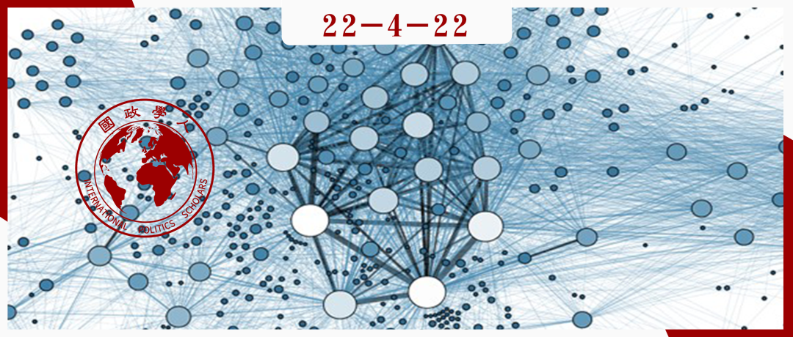

收录于合集

冲突与合作的网络
作者： Jennifer M. Larson，范德堡大学政治科学系副教授。
编译： 阮辰阳（国政学人编译员，复旦大学国际关系与公共事务学院国际政治系）
来源： Larson, Jennifer M. “Networks of Conflict and Cooperation.” Annual Review of Political Science 24 (2021): 89-107.

导读
网络分析涉及的专业概念可参考《【研究方法】国际关系中的网络分析 | 国政学人 第334期》，在此不加赘述。本文即是在此基础上，考察不同情境下行为体网络对于行为体之间冲突或合作结果的影响。
本文作者通过对前人的研究综述指出，冲突与合作并非源于孤立的个体行为，相反，在诸如叛乱、国家间冲突、抗议动员和非正式治理等情境中，行为体间是高度相互依赖的。因而，学界对于行为体网络的研究旨在探究与冲突合作相关的相互依赖关系，并着重考察这些相互依赖关系如何塑造冲突与合作的结果。初步研究成果证明了网络的作用，即社会网络可以提供信息、传递集体制裁压力，同时也可以帮助群体克服社会困境，从而建立互动。尽管这是一个相对前沿的研究问题，随着越来越多的研究得出不同领域内冲突与合作的特定结果，下一步研究将注重对上述结果的整合，用以探究行为体间的哪些联系在哪些情形下是重要的，而这些联系又是如何发挥作用的。
在本文四个情境中，我们尤其需要关注第五部分 主权国家形成的国际网络对于国家间冲突与合作结果的塑造 。作者在定义 节点（nodes，在这里指主权国家）与链路（links，在这里指国家间的一种互动） 之后，对 链路的内容（如自由贸易协定、国际组织中的非正式联系等）与性质（“积极/友好”或“消极/敌意”） 进行展开论述，这里对链路性质的探讨具有社会建构主义主体间性的意味。接着，通过对 网络各节点的“度”（degree）与关系分布（如友好关系与敌意关系的分布） 的探究，作者指出了 网络分析对于国际关系理论的贡献 ：第一，不仅国家实力能够影响其暴力倾向，国家在国际网络中的 位置 也是至关重要的影响因素；第二，对两国间某领域关系的研究不能仅局限于两国之间的权力对比与互动，还要考虑到 所有 第三国 与这两个国家的互动情况，进行系统性地网络分析。
编译
01
引言
冲突与合作并非源于孤立的个体行为：武装叛乱中的新兵会关注其他潜在新兵的行动；两国之间的战争部分取决于它们与第三方国家的正式联盟与贸易关系；抗议者只有在具备动机、知晓抗议地点、可以预测其他人能加入进来或者其他同伴对他们表示赞许的情况下才能聚集起来；整个群体只有在成员确信他人也承诺制裁不当行为的时候才能保持安宁。
有关冲突与合作的网络研究试图探究核心行为体间（与冲突合作）相关的相互依赖关系及其运作方式。该领域的研究旨在证明网络与冲突合作结果的相关性、网络内部各行为体间的关系性行为对结果的影响以及网络结构（即联系分布）的作用机制。 当前，学界已证实网络的有效性，下一步将对网络起效的机制及网络结构的作用进行深入研究。
本文将逐一对四个议题领域的研究进行综述，并指出在这些领域 冲突或合作的结果除了应考虑行为体（单元）本身情况外也应注重考察行为体相互关联的方式。
**
**
前两个议题有关合作结果： 第一个议题即 抗议政治中集体行动困境的克服 ，该领域的合作结果可通过理论、实证与社交媒体数据分析等方式证实；第二个议题有关 非正式治理 ，包括对和平行为的促进、规范的遵守与社区公共产品供应的研究，强调网络的信息传递功能与团体制裁机制。
后两个议题有关冲突结果： 第三个议题关注社会网络作用于 国内冲突 的不同方式，其中包含对士兵招募、战斗策略与驻地问题的影响；最后一个议题有关国家间网络对 国际冲突 的影响。
此外，本文就各项议题也将分别提出几个最为迫切的问题作为未来研究议程。
02
集体行动中的网络
诸如抗议等社会运动可认作合作行动，社会学家早已对社会网络之于行动过程的重要性有所研究。在网络中， 社会联系可以直接地或间接地传递信息（前者如抗议地点的信息传递，后者如对抗议规模的预期），同时可以作为施加社会压力的渠道以奖励参与者及谴责逃避者。
抗议网络的研究重点之一在于对参与动机扩散过程的构建。研究表明，网络中紧密的小型团体如果相互接应便很可能成功带动整个抗议行动，这是因为参与意愿较高的小型团体可以说服相比自身参与意愿较低但规模较大的团体，后者可以再去说服比其意愿更低但规模更大的团体，以此类推，便能形成大规模抗议。若从个人作为网络节点的角度进行考察，个人在网络中与他人的 联系作为有关抗议的信息传输渠道 是非常重要的，他将从中了解身边有多少人计划参与抗议，若参与规模超过他心中设定的 阈值 ，他也将参与其中。此外，由于人们的阈值各不相同， 个人作为节点在网络中的分布 也十分重要：如果高阈值（参与意愿较低）的个人仅被其他高阈值者环绕，他将倾向于呆在家里，但若他与低阈值者存在联系则结果往往相反。
社交媒体使学者更能把握抗议参与者及其相互关联的资料，如今学界针对社媒数据的研究已有三项主要发现：第一， 抗议参与者之间的关联相较未参与者之间更为紧密 ；第二， 处于网络边缘的个人可以极大地影响到抗议是否发生 ，这既是因为边缘群体规模如此之大会产生更大效益，也是因为边缘个人的参与会给其他边缘群体释放十分可信的信号，表明已有足够人参与到抗议筹划之中；第三， 线上网络结构中的特定节点能够更快地传递信息 ，这些节点往往为拥有大量追随者的账号或作为团体之间信息传输的桥梁起到特殊作用。
未来研究议程主要围绕两点。首先，网络对抗议的助力可通过许多不同的机制起作用，那么 这些机制有哪些，不同机制分别适用于哪些不同情况？ 其次， 抗议网络如何应对当前越来越多的干扰信息与干扰策略？ 这些干扰往往来自政府的反制，例如它可以通过中断互联网来关停线上抗议网络。
03
非正式治理中的网络
非正式治理研究旨在回答在不存在维持秩序的权威的团体中成员之间如何合作并提供公共物品的问题。本文认为，非正式治理网络中的合作取决于三个主要因素： 信息传输 情况、个人对未来遭同伴 制裁 的预期与网络 结构 （包括个人在网络中的 位置 ）。
网络本身扮演着信息传输的角色，充分的信息可以促进成员间合作，个人通过网络获取其他人的行动信息或传播相关信息。一般而言， 信息传输速度越快，某位成员的不端行为就会被越多人知晓，该成员受到他人集体制裁的可能性就越高 ，且这种可能性越高，也能 起到对所有成员的威慑作用，因为个人对未来遭同伴制裁的预期将更为可靠 。在这种情况下，成员之间合作的可能性也会增大。
网络中成员间联系的分布（即网络结构）对合作亦有决定性影响。网络密度越大，成员之间通过 多轮互动达到互惠 的机制优势越能显现，合作结果可能性越高。此外， 网络结构的碎片化程度 也会影响合作结果，在现实案例中即表现为团体内民族（或其他身份）的多样性程度。从个体角度看，个人在整个网络结构中的位置对个人合作行为也会造成显著影响。例如，处在网络 中心位置 的成员在提供公共产品的问题上更为慷慨（即愿意为团体做出更多贡献）；处在网络 边缘位置 的成员更容易行为不端或遭到网络其他部分成员的欺凌；处在网络瓶颈（bottleneck）等 要害位置 的成员具有更多行为不端或传播虚假信息的动机，因为他们作为某种程度上的信息垄断者可以不计上述行为的后果。此外，个人与朋友和陌生人间的联系效果也是不同的。
然而，当前研究的盲点在于，对于网络机制效果进行考察的前提是其能被学者认识到，所以在这里存在 机制何时会起作用并被学者认识到 这一更为根本的问题，而这也是未来研究重点之一。
04
国内冲突中的网络
学界对国内冲突的研究注重考察 战斗组织的内部组织与相互联系 以及战斗组织征募所依赖的 民间团体网络 ，并探究以上两种行为体所涉及的网络对于 冲突几率与时长 的影响。
战斗组织网络方面，本文打破团体黑箱，探究团体内部网络与团体之间网络的效果。作者主要从 叛乱组织、政变精英团体与恐怖组织 三个案例入手：第一，处于危机中的叛乱组织内部越碎片化，组织度越低，内战开始的可能性越大；第二，叛乱组织之间的社会联系远近会影响合作结果，如果叛乱组织间的社会联系过近（这意味着它们的征募和支持基础相似），它们搭便车的动机就越强烈，因为它们认为从伙伴叛乱组织的努力中可以轻松获益；第三，对政变而言，精英越处于高层网络的中心就越可能参与政变；第四，对恐怖组织而言，组织内部网络结构对于恐怖袭击效果具有关键性影响，同时组织之间的关联与合作越紧密，恐怖袭击的杀伤力就越大。
民间团体网络对于武装团体各阶段行动都有重要影响。 首先，在武装团体形成过程中，既有社会网络能够塑造团体特征，个人在武装团体中的角色往往与既有社会网络中承担的角色类似。其次，在武装团体的征募过程中，与现有反叛者有着更紧密的社会联系的成员更容易加入，同时武装团体也会利用当地网络来收集信息筛选候选人。第三，在武装反叛的起始阶段，对新生反叛组织来说，其最初行动地区的民众是他们的最大威胁，因为如果这些民众向政府提供信息，反叛组织就难以起势；而若当地民间团体网络完整且相互信任（一般属于同族），当民众能够确切知道其他民众不会泄密时，反叛成功率将会增加。第四，在武装反叛之后的阶段，在国家有强力存在感且在其掌控下当地社区网络易于展开集体行动的地方，反叛组织将倾向于避免占领此地。第五，网络联系对于说服他人从事暴力犯罪（如种族屠杀）也有作用。
未来研究议程则围绕三大重点展开：其一，战斗组织的内部网络及其之间的网络与民间团体网络如何相互作用；其二，同一个网络结构若能支持叛乱组织形成，是否也可以在之后的招募、征战乃至战后谈判中起到支持作用；其三，围绕促进和平进行合作的网络与为组织暴力进行合作的网络之间有何异同。
05
国家间冲突中的网络
在研究国际冲突的过程中，学者多会触及一国与他国交战历史与现状、第三国的调解、以及一国与第三国断绝关系所造成的成本等等因素，而这些因素均可在国际冲突的网络研究中得到解释。有关国际冲突的网络研究 把国家作为节点（nodes）并将链路（links）定义为国家之间的一种互动（interaction） 。链路有多种类型，在这里以 贸易关系与国际组织成员关系 为例。
在国际贸易网络中，国家之间的链路可以定义为贸易协定或贸易渠道的打通。学界从中已经得到两个重要结论。首先， 如果一国与更多其他国家存在更紧密的贸易联系的话，该国对所有国家的总体暴力倾向将降低 。 这一结论已 不同于传统的“相互贸易国家互相开战几率更低” ，而是表明 一个国家在国际贸易网络中的位置 会影响其暴力倾向，这意味着 该国与所有第三国的联系 也需列入考察范围。其次，国际贸易网络可以呈现出贸易联系“集团化”的结构，在这种情况下， 同一贸易集团的国家之间的交战几率会变得很低 。这一结论也是牵涉到了该国与第三国之间的联系：两国之间的交战几率在某种程度上取决于其他国家之间的贸易模式。
各国在国际组织中的成员关系也可以作为一种链路进行研究。 处于同一政府间国际组织网络中且有非正式联系的成员国之间相互开战的几率较低，这可能是因为网络中的第三国可以进行调解。 然而，如果该网络中有太多国家因与第三国有较多联系而均占有重要地位的话，这会对网络稳定造成压力，提高大国间冲突的可能性。
除了以不同议题作为链路的分类标准，还可以通过“积极或友好”（positive/friendship）或“消极或敌意”（negative/enmity）进行定义。 国际网络中国家之间的消极关系本身不是问题，但当 网络中消极与积极关系的分布不均衡 时问题就会产生，容易爆发冲突。这种分布不均衡常常体现为“我朋友的朋友是我的朋友”与 “我朋友的敌人是我的敌人”的逻辑遭到破坏 的情况，如 A国与B国均与C国联盟，但A、B两国相互仇视 。
有关国际冲突的网络研究有许多重要的问题需得到解释。第一，不同国家间网络之间如何互动；第二，哪些类型的国家间网络对国际冲突的爆发与结果有更大影响；第三， 我们怎样能确定网络一定有效，尤其是当处于贸易网络中央的国家是因其他因素导致战争倾向较低的时候。 最后， 网络如何变化，即国家如何基于已有国际网络的特点创造新的链路 ，也许当前有较多链路的国家因其被认为是值得信赖的而更能进一步增加与他国的链路，抑或是当B国与C国均与A国存在链路时，B、C两国之间更可能建立链路从而形成“三元闭环”。这些变化对国际冲突发生的影响也需考察。
06
结论
冲突与合作网络领域的研究已取得相当大的进展。对网络的细致研究远超概念证明的范围，对于集体行动、非正式治理、国内冲突与国家间关系这四个重要研究领域具有不可否认的价值。
对任一议题网络研究均可分为以下五个阶段的问题来探究： 第一，网络是否起作用；第二，何种网络对何种结果有作用；第三，网络的结构是否起作用；第四，网络的运作机制是什么；第五，网络的作用是在什么样的情况下体现出来并被认识到的。 由于第一个问题已获得充分关注，未来的研究应重点解答后四个问题。
词汇积累
节点 node
链路 link
度 degree
瓶颈 bottleneck
审校 | 李思 卫艺璇
排版 | 彭凌懿 王慧瑜
文章观点不代表本平台观点，本平台评译分享的文章均出于专业学习之用, 不以任何盈利为目的，内容主要呈现对原文的介绍，原文内容请通过各高校购买的数据库自行下载。

国政学人
支持学术公益与知识传播
微信扫一扫赞赏作者 __赞赏
已喜欢，对作者说句悄悄话
取消 __
发送给作者
发送
最多40字，当前共字
上一页 1/3 下一页
长按二维码向我转账
支持学术公益与知识传播
受苹果公司新规定影响，微信 iOS 版的赞赏功能被关闭，可通过二维码转账支持公众号。